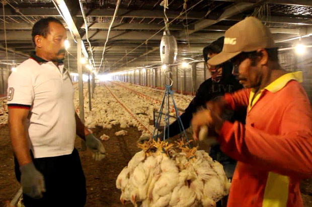
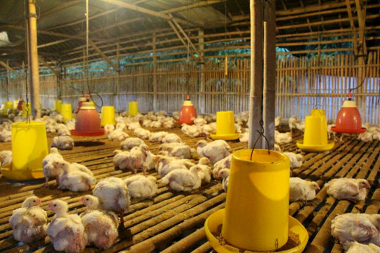

Ini Cara Tingkatkan Ekspor Telur Tetas dan Daging Ayam Olahan
Industri perunggasan Indonesia, saat ini terus berkembang dengan pesat. Hal ini dibuktikan dengan telah dilakukannya ekspor hatching eggs atau telur tetas ayam dan produk daging ayam olahan ke beberapa negara sepanjang tahun 2018.Kementerian Pertanian (Kementan) telah melakukan berbagai upaya untuk mendorong ekspor terutama agar sesuai dengan standar kesehatan melalui sertifikasi agar diterima negara-negara......baca selengkapnya >>>>>>

baca selengkapnya >>>>>>
Harga Daging Ayam Turun Drastis, Kemendag Sebut Akibat Over Supplai
Kementerian Perdagangan (Kemendag) menerangkan, penurunan harga daging ayam secara drastis dalam beberapa pekan terakhir akibat adanya over supplai atau kelebihan pasokan. Sekretaris Jenderal Kemendag Karyanto Suprih menekankan, hal ini perlu ditangani agar tidak membuat peternak terus merugi."Ini karena over supplai, ya sekarang kita tidak bisa menekan para peternak ini. Kita hanya menjaga dan meminta supplier jangan berlebihan........baca selengkapnya >>>>>>

baca selengkapnya >>>>>>
Jelang Ramadan, Asosiasi Peternak Ingin Harga Ayam Potong Stabil
Gabungan Asosiasi Pengusaha Peternak Ayam Nasional (GOPAN) memastikan ketersediaan ayam potong aman menjelang datangnya bulan suci Ramadan. Selain itu harga pokok penjualan (HPP) ayam potong diprediksi normal, lantaran stok ayam yang ada di cold storage saat ini tercukupi hingga dua bulan mendatang. Sekretaris Jenderal GOPAN, Sugeng Wahyudi mengatakan, stok ayam untuk bulan bulan Ramadan dipastikan berlebih. Saat ini stok ayam ......baca selengkapnya >>>>>>